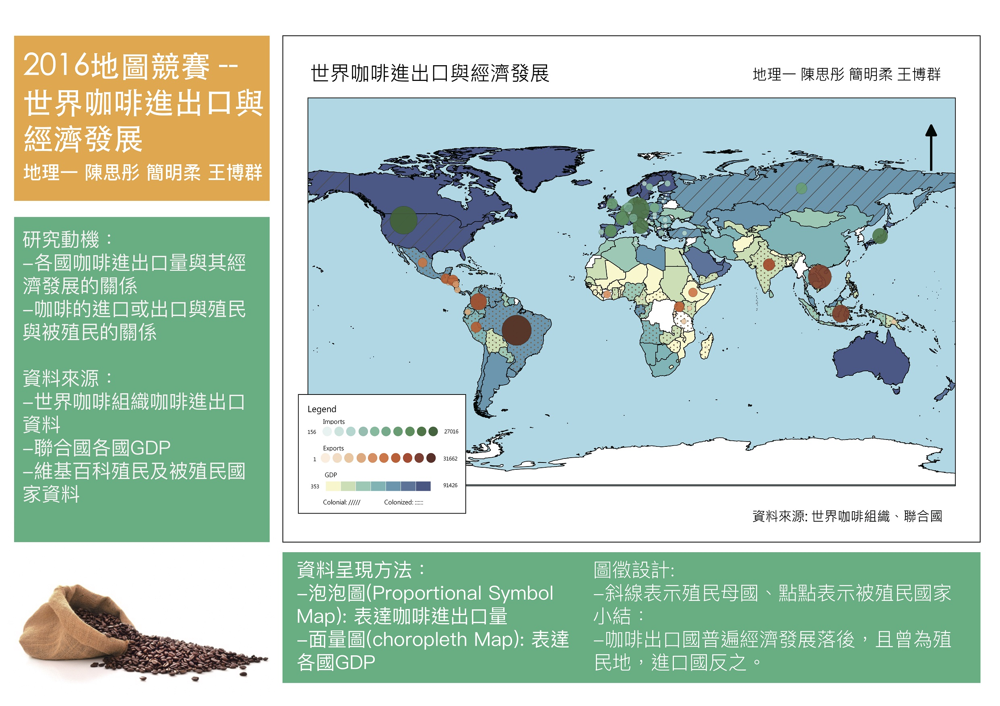

貴妃的咖啡絲綢之路 - 世界咖啡流通與經濟發展
 三等獎
三等獎
作者介紹
地理一
王博群
地理一
陳思彤
地理一
簡明柔
-
善用面量圖與泡泡圖，也對於網路地圖cartoDB做出許多嘗試。
——地理一 范原睿 -
畫出了殖民母國與咖啡輸出國與 GDP的關聯，
近現代的歷史受帝國主義影響巨大，熱帶國家受剝削的情形可在圖中看出。
——地理一 蕭浚晏 -
運用大量資料製作面量圖跟泡泡圖和疊合，
並且使用時間軸的方式使它具互動性，還有額外增加超連結補充詳細資料。
——地理二 劉品吟
地圖海報

網路地圖
主題說明
我們想透過各國的咖啡進出口量來理解 各國的經濟發展差異以及殖民的軌跡， 我們從世界咖啡組織的網站蒐集了咖啡的進出口資料，也從聯合國的網站蒐集了世界各國GDP的資料。 由於資料種類眾多，我們採用不同手法來呈現不同資料：
- 利用泡泡圖的方式呈現咖啡進出口的狀況
- 利用面量圖呈現每個國家從2006年~2013年GDP的平均
- 接著以斜線表示殖民母國，點點代表被殖民國
- 在電子地圖上加上時間軸，讓大家可以清楚看到隨著時間推進的變化